Du Lundi 22 Mai au Vendredi 23 Juin j’ai effectué un Stage afin de Valider ma première Année de BTS SIO, ce stage s’est fait dans le domaine du développement principalement Logiciel.
Je faisais mon stage au centre d'ingénurie materielle de la SNCF.
La SNCF est une entreprise ferroviaire française, divisé en plusieurs branches, notamment SNCF voyageur, celle dans laquelle nous nous trouvons actuellement,
L’entreprise propose des solutions de mobilitées en france ou en europe grâce aux voies ferroviaires
L’entreprise pour laquelle je travaillais est chargée d’effectuer des tests de sécurité sur des véhicules, et pour éviter de devoir monopoliser un véhicule pour faire des tests, on simule les tests.
Pour cela on utilise des machines capables de calculer pleins de paramètres à la fois.
On créer donc un document Excel en rentrant toutes les données que l’on veut tester et choisir chaque paramètre du véhicule si on veut qu’ils soient actif ou non ainsi que l’ensemble des résultats prévus pour chaque paramètre, c’est ce qu’on appelle une fiche de test.
Après cela il faut traduire le document pour que celui-ci soit lisible par la machine il faut donc le transformer un format ‘.xml’ ensuite la machine test tout cela et renvoie un fichier xml avec les résultats de la simulation il faut ensuite que tout soit mis en commun on doit donc tout comparer entre les résultats prévus et ceux obtenus.
Pour simplifier toutes ces taches on utilise un logiciel capable de tout faire : c’est-à-dire qui converti une fiche test au format ‘.xml’ et qui est capable de comparer une fiche de test avec les résultats obtenus ce qui est un gain de temps énorme.
Voici le planning de la mission 1
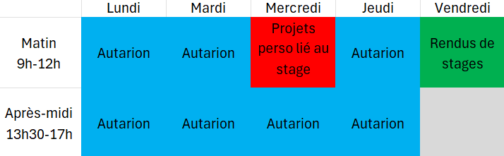
et celui de la mission 2

Voilà donc tout ce qui concerne l'organisation, nous allons voir désormais le déroulement des missions.
Mission 1
Ma première mission était donc de refaire l’interface graphique d’Autarion afin que celle-ci soit plus agréable et bien plus facile d’accès. Cette mission j’ai dû la réaliser seul, je l’ai faite via le logiciel Visual Studio code. Voici à quoi ressemblait initialement l’interface d’Autarion :
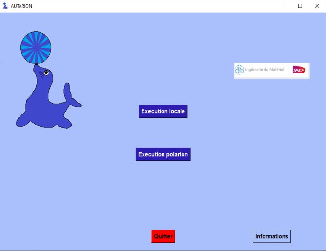
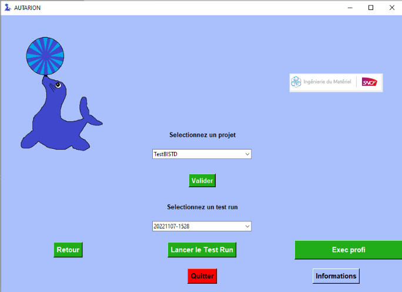
Pour y parvenir j’ai aussi beaucoup utilisé GIT pour pouvoir récupérer via des anciennes versions si un dysfonctionnement arrivait de plus, cela est très pratique car tout le monde peut créer sa branche du projet pour qu’on modifie chacun un quelque chose souhaité dans le programme tout en remettant tout en commun après. Ensuite on m’a donné une maquette de ce à quoi devait ressembler mon projet à la fin, sous forme d’image :
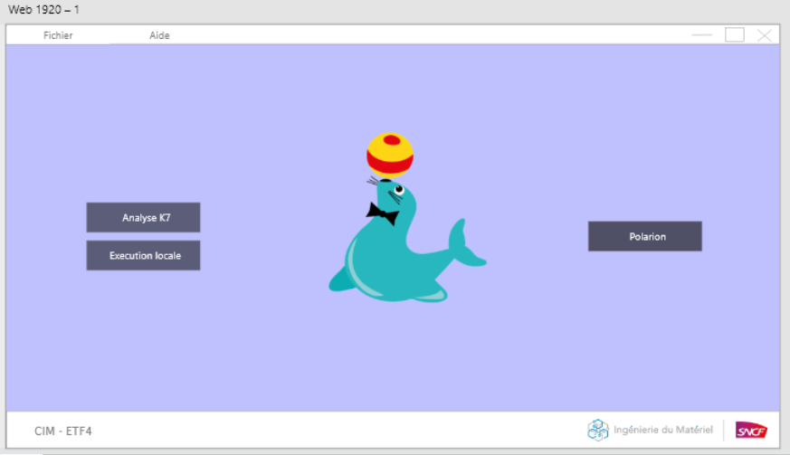
J’ai commencé par la créer dans un nouveau projet, de manière à voir comment j’allais m’y prendre, sans pour autant que mon programme de test soit fonctionnel.
Une fois réalisé j’ai combiné ça avec le programme de base ce qui a été très difficile car les deux programmes ne fonctionnaient pas pareils, l’un utilisait des coordonnées pour placer un élément sur la page et moi j’ai créé une grille (invisible) sur laquelle je plaçais tous mes éléments. De plus je devais donc réadapter toutes les fonctions renommer toutes les variables sans compter les soucis majeurs que j’ai pu avoir comme un souci que j’ai eu : Quand on veut déplacer une image on créer deux Canvas (zone de dessin) sur lequel on place l’image. Le premier apparait dès l’ouverture de la fenêtre, pour placer l’image, quand on appuie sur un bouton un autre Canvas est créé a un autre endroit pour accueillir le nouvel emplacement de l’image, en appuyant sur le bouton retour l’image change de Canvas mais le Canvas non utilisé cache tous les boutons en se mettant devant, j’ai commencé par utiliser une variable pour que lorsqu’on appelle la fonction on sache quel Canvas doit être utilisé avec une variable contenant soit 1 soit 0, en fonction de cela on vérifie avec if la variable et on explose l’autre Canvas qui gêne, seul soucis, au lancement de l’appli on cherche à exploser le deuxième Canvas mais il n’existe pas encore donc l’appli plante, alors à la fin du If on copie, colle toutes les lignes pour créer le Canvas et on les remet, cela fonctionnait que dans certains cas précis, alors j’ai trouvé qu’on pouvait faire monter de plan un bouton et je l’ai fait passer devant le Canvas pour que ceux-ci soient utilisables, on m’a demandé quelques modification, une fois faites voici le résultat final :
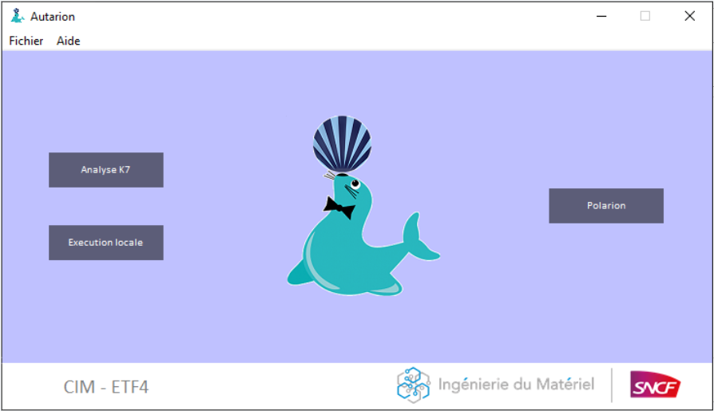
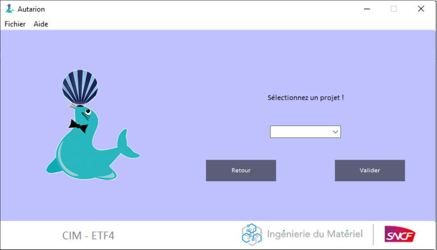
Le but était aussi que j’optimise le code cela était relativement long car je devais comprendre chaque ligne de code car la grande majorité n’étaient pas commentées, je devais donc effectuer des test moi-même pour savoir ce qui étais utile et en quoi ceci était utile, Je devais ensuite tout commenter afin de tout documenter directement dans le programme c’est aussi ce pour quoi je devais bien comprendre le programme dans les moindres détails, connaitre chaque ligne de code mêmes celles que je n’utilisais pas directement.
Mission 2
Ma deuxième mission était un peu plus technique, Un deuxième banc de test est arrivé dans l'entreprise par conséquent
li fallait modifier l'application car le chemin vers le banc de test était écris directement en dur dans le code l'objectf était donc de modifier l'application afin de pouvoir changer de banc de test sans avoir à changer le code, donc changer de banc de test directement via l'application
on apellera donc une 'configuration' un banc avec tout les chemins vers des composant nécéssaire pour le fonctionnement.
Cette mission a été faite en collaboration avec mon tuteur, j'étais personellement chargé de modifier le front, c'est a dire la partie visible de l'application avec donc un système de TopLevel, une TopLevel est une fenetre supplémentaire reliée à l'application.
J'ai donc commencé par une TopLevel pour changer de configuration, dans le service ou l'on es il y en a deux 3G ou 4G, les TopLevels sont accessibles via la barre du haut du menu. Voici donc le premier résultat:
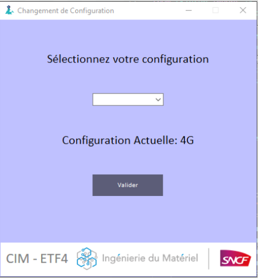
Il y a eu une grosse difficulté sur l'affichage du label de la configuration actuelle car ce fut difficile de l'actualiser comme nous le souhaitions.
Ensuite il fallait pouvoir ajouter une configuration au cas où d'autres banc arriveraient dans le futur ou que l'on souhaite exporter l'application dans un autre service de l'entreprise.
Voici donc ce que j'ai fais:
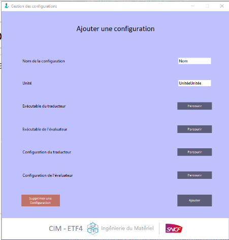
Mon tuteur lui s'occupait de tout relier à une BDD
J'ai donc ensuite fait une top level pour supprimer une configuration
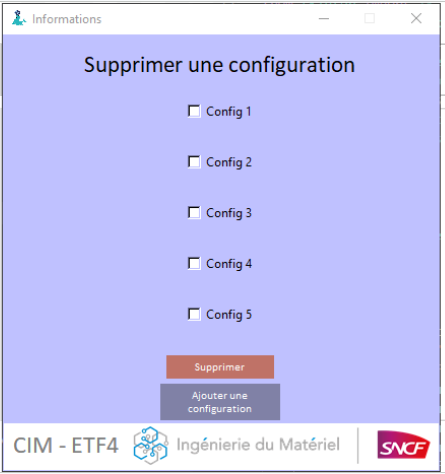
Puis aussi une pour Modifier une configuration si besoin
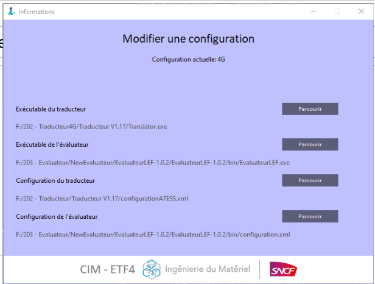
Et pour finir un ajout de la configuration actuelle sur la page principale pour ne pas a avoir a chercher sur quelle configuration on est:
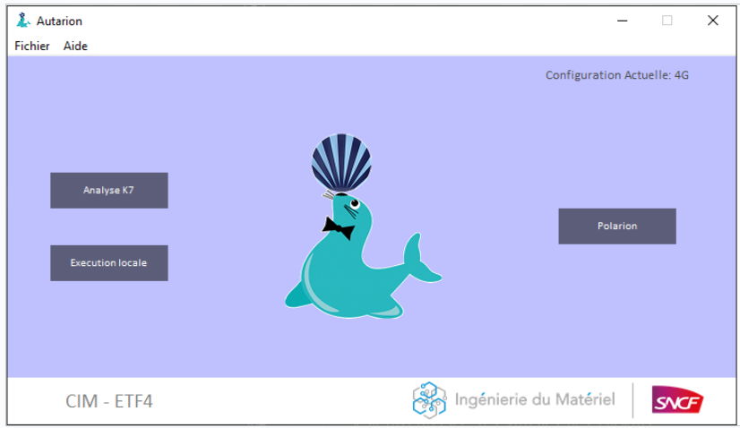
Résultat
Au final l'application marche bien, elle a pu être uttilisée dans toute l'entreprise, le besoin de l'entreprise a été comblé, les différentes tâches ont été mené aux succès. Ce stage a été très enrichissant j'ai pu acquérir beaucoup de savoir et de compétences mais aussi de voir le fonctionnement de ce qui pourrait être mon futur métier.